pt cm
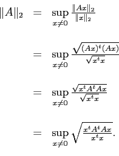
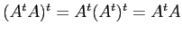
, on en déduit que la matrice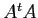
est symétrique et il suit d'un théorème d'algèbre linéaire que n'admet que des valeurs propres réelles.
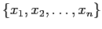
une base orthonormale de vecteurs propres de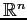
.
Si
 , on sait qu'il existe des constantes
, on sait qu'il existe des constantes
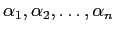
telles que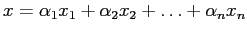
.Mais alors,
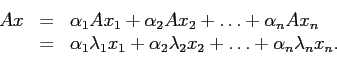
On en déduit que
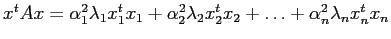
puisque les vecteurs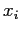
sont deux à deux orthogonaux.Comme
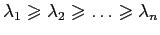
, on a que
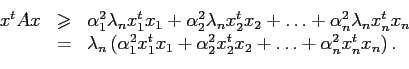
De plus
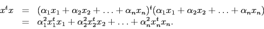
Ainsi,
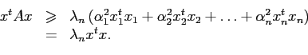
L'autre inégalité s'obtient de la même façon.
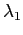
. On a que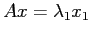
et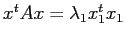
d'où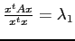
.
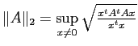
.En vertu de la partie c),
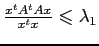
où est la valeur propre de . La partie d), elle, nous dit que cette inégalité est en fait une égalité pour au moins un vecteur de .Ainsi,
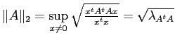
où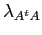
est la valeur propre dominante de la matrice .
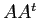
ont les mêmes valeurs propres. On montre d'abord que si
Supposons en premier lieu que
 . Alors,
. Alors,
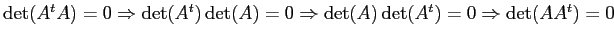
, ce qui montre queDans un deuxième temps, supposons que
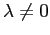
. Alors, il existe un vecteur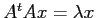
. Ainsi,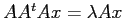
d'où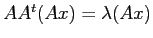
et on voit que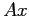
est un vecteur propre associé à la valeur propre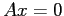
, on a que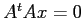
d'où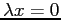
puisDonc, et ont les mêmes valeurs propres et en particulier, ont la même valeur propre dominante, ce qui prouve l'énoncé.
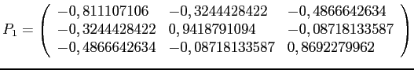
d'où le système
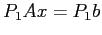
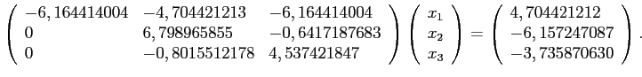
On obtient ensuite la matrice
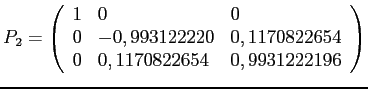
d'où le système
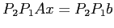
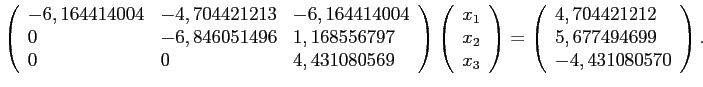
Une phase ascendante de résolution donne la solution
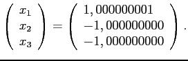
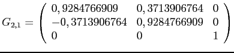
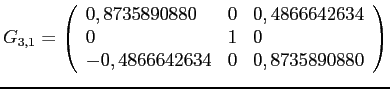
et
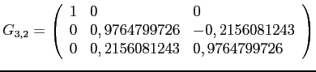
d'où la solution
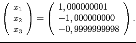
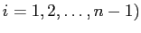
, on a
| Pour calculer 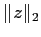 |
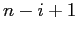 multiplications |
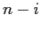 additions |
|
| 1 racine carrée | |
| Pour calculer 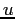 |
1 multiplication |
| 1 addition | |
| Pour calculer 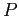 |
1 addition et 2 multiplications pour le dénominateur |
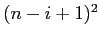 multiplications pour |
|
| multiplications pour la division par le dénominateur | |
| additions pour soustraire de l'identité | |
| Pour calculer | Cela revient à une multiplications de matrices par |
| d'où opérations | |
| Pour calculer | opérations. |
Cela fait donc, à l'étape  ,
,
opérations.
ce qui donne en tout
opérations,
auxquelles il faut ajouter les  opérations pour la phase ascendante.
opérations pour la phase ascendante.
Pour le produit
avec la matrice  modifiée, il faut
opérations.
Pour le produit
avec le vecteur
modifiée, il faut
opérations.
Pour le produit
avec le vecteur  modifié, il faut
opérations.
modifié, il faut
opérations.
On a donc jusqu'à présent opérations à répéter pour les rotations nécessaires à une colonne.
En tout, cela représente
opérations,
auxquelles il faut ajouter les  opérations pour la phase ascendante.
opérations pour la phase ascendante.